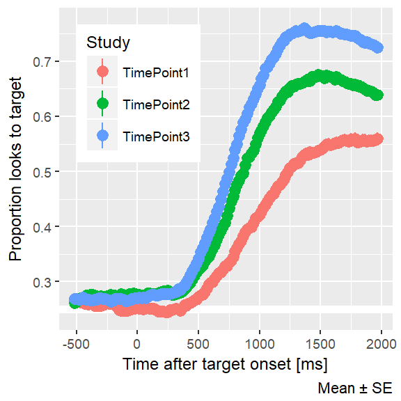
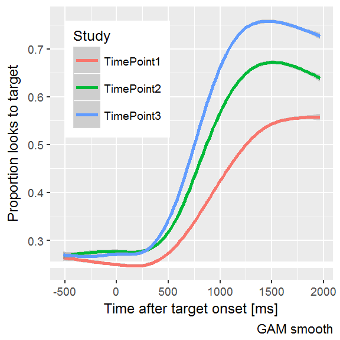
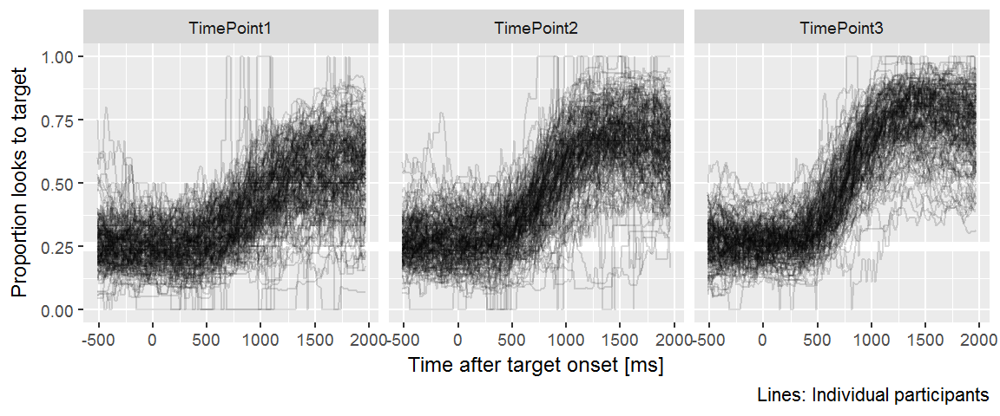
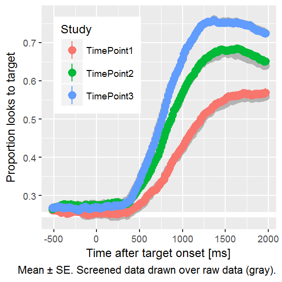
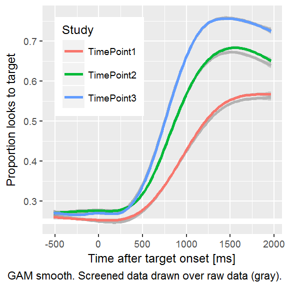

Chapter 9 Prepare and explore the data
Notebook status: Code is hidden. Now, the results and figures can be fleshed out and finalized.
9.1 Raw data visualization
First, let’s plot the overall averages from each year.

The raw data plainly confirm hypothesis 1:
Children’s accuracy and efficiency of recognizing words will improve each year.
We can also plot a spaghetti plot to invidual lines for each participant. We see that they tighten from year to year.

9.2 Data screening
After mapping the gaze coordinates onto the onscreen images, we performed data screening. We considered the time window from 0 to 2000 ms after target noun onset. We identified a trial as unreliable if at least 50% of the looks were missing during the time window. We excluded an entire block of trials if it had fewer than 12 reliable trials.
Table 9.1 shows the numbers of participants and trials excluded at each time point due to unreliable data.
| Dataset | Study | N Children | N Blocks | N Trials |
|---|---|---|---|---|
| Raw | TimePoint1 | 178 | 332 | 7967 |
| TimePoint2 | 180 | 347 | 8327 | |
| TimePoint3 | 163 | 322 | 7724 | |
| Screened | TimePoint1 | 163 | 291 | 5951 |
| TimePoint2 | 165 | 305 | 6421 | |
| TimePoint3 | 156 | 295 | 6483 | |
| Raw − Screened | TimePoint1 | 15 | 41 | 2016 |
| TimePoint2 | 15 | 42 | 1906 | |
| TimePoint3 | 7 | 27 | 1241 |
Plot the data after partial data screening. We include the curves from the earlier plots in gray. The data-cleaning process slightly increases the average accuracy during the plateau-ed portion of the growth curve.

9.2.1 Add a note about the bad version of the experiment
(Skip for now.)
9.2.2 Special case data screening
(Skip for now. This is where I review the participant notes and will remove children who have to be excluded for other reasons, like being diagnosed with a language disorder at TimePoint 3.)
9.2.3 Interim summary
- Visual evidence that group averages get faster and more reliable at looking to target each year.
9.3 Prepare the dataset for modeling
9.4 Data preparation
Above we cleaned the data to remove trials with excessive missing data and blocks of trials with too few trials. Now we prepare the data for modelling.
#> $bin_width
#> [1] 3
#>
#> $start_time
#> [1] 250
#>
#> $end_time
#> [1] 1500
#>
#> $bin_length
#> [1] 50We downsampled the data into 50-ms (3-frame) bins in order to smooth the data. We modeled the looks from 250 to 1500 ms. Lastly, we aggregated looks by child, study and time, and created orthogonal polynomials to use as time features for the model
Plot the model-ready data. For this plot, we use the so-called empirical logit transformation because the regular logit (log-odds) generates too extreme of values for plotting.

Those extreme lines indicate sparse data where there are zero-to-few looks to the distractors compared to the target. These are the 20 most extreme bins, to illustrate how empirical logit tames infinite values.
| Study | ResearchID | Time | Primary | Others | logit | elogit |
|---|---|---|---|---|---|---|
| TimePoint2 | 607L | 1300 | 30 | 0 | Inf | 4.11 |
| TimePoint2 | 607L | 1350 | 29 | 0 | Inf | 4.08 |
| TimePoint2 | 640L | 1000 | 33 | 0 | Inf | 4.20 |
| TimePoint2 | 640L | 1050 | 29 | 0 | Inf | 4.08 |
| TimePoint2 | 640L | 1100 | 31 | 0 | Inf | 4.14 |
| TimePoint2 | 640L | 1150 | 30 | 0 | Inf | 4.11 |
| TimePoint2 | 640L | 1200 | 27 | 0 | Inf | 4.01 |
| TimePoint2 | 640L | 1250 | 24 | 0 | Inf | 3.89 |
| TimePoint2 | 640L | 1300 | 27 | 0 | Inf | 4.01 |
| TimePoint2 | 640L | 1350 | 26 | 0 | Inf | 3.97 |
| TimePoint2 | 640L | 1400 | 28 | 0 | Inf | 4.04 |
| TimePoint2 | 640L | 1450 | 27 | 0 | Inf | 4.01 |
| TimePoint2 | 640L | 1500 | 28 | 0 | Inf | 4.04 |
| TimePoint3 | 014L | 1350 | 58 | 0 | Inf | 4.76 |
| TimePoint3 | 014L | 1400 | 53 | 0 | Inf | 4.67 |
| TimePoint3 | 640L | 1300 | 110 | 1 | 4.70 | 4.30 |
| TimePoint3 | 037L | 1350 | 88 | 1 | 4.48 | 4.08 |
| TimePoint3 | 037L | 1300 | 87 | 1 | 4.47 | 4.07 |
| TimePoint3 | 037L | 1250 | 84 | 1 | 4.43 | 4.03 |
| TimePoint3 | 640L | 1100 | 94 | 2 | 3.85 | 3.63 |